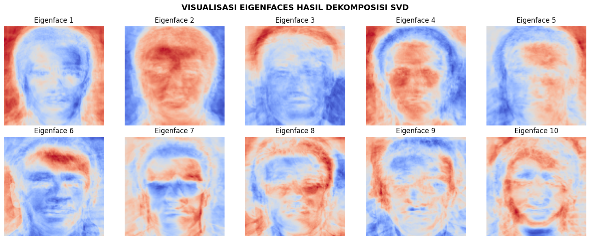
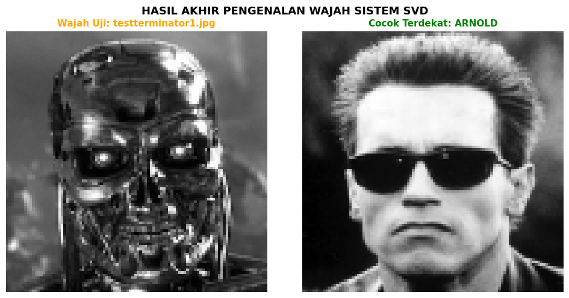

PROJECT TUGAS: Pengenalan Wajah (Eigenface) Menggunakan SVD dengan Folder ‘faces’#
Notebook ini menggunakan data citra riil dari folder faces (berisi Arnold Schwarzenegger, Sylvester Stallone, dan Elizabeth Taylor).
Program dirancang cerdas agar mendukung dual-mode (dapat berjalan lokal di VS Code Anda maupun di Google Colab cloud)!
1. Import Library & Setup Deteksi Lingkungan (Colab vs Lokal)#
import os
import cv2
import zipfile
import numpy as np
import matplotlib.pyplot as plt
# 1. Mendeteksi Lingkungan Kerja (Google Colab vs PC Lokal)
try:
import google.colab
IN_COLAB = True
except ImportError:
IN_COLAB = False
IMG_SIZE = 100
if IN_COLAB:
print("Mendeteksi Lingkungan: GOOGLE COLAB")
from google.colab import files
# Jika folder faces belum ada di Colab, minta upload zip
if not os.path.exists("faces"):
print("Silakan UPLOAD file zip 'faces.zip' Anda!")
uploaded = files.upload()
zip_name = list(uploaded.keys())[0]
# Ekstrak zip ke direktori Colab
with zipfile.ZipFile(zip_name, 'r') as zip_ref:
zip_ref.extractall("/content/")
print("Dataset berhasil diekstrak di Google Colab!")
dataset_path = "/content/faces"
else:
print("Mendeteksi Lingkungan: LOKAL (VS Code / PC)")
dataset_path = "faces"
if not os.path.exists(dataset_path):
raise FileNotFoundError(f"Folder '{dataset_path}' tidak ditemukan! Letakkan folder 'faces' di workspace Anda.")
Mendeteksi Lingkungan: LOKAL (VS Code / PC)
---------------------------------------------------------------------------
FileNotFoundError Traceback (most recent call last)
Cell In[1], line 37
34 dataset_path = "faces"
36 if not os.path.exists(dataset_path):
---> 37 raise FileNotFoundError(f"Folder '{dataset_path}' tidak ditemukan! Letakkan folder 'faces' di workspace Anda.")
FileNotFoundError: Folder 'faces' tidak ditemukan! Letakkan folder 'faces' di workspace Anda.
2. Load Dataset Wajah Riil dari Folder ‘faces’#
Fungsi ini akan meload seluruh citra latih di dalam folder faces (mengabaikan file uji berawalan test), mengekstrak nama identitas dari nama file (misal: arnold01.jpg menjadi arnold), me-resize ke \(100 \times 100\) grayscale, dan me-flatten menjadi vektor satu dimensi.
def load_dataset(path):
data = []
labels = []
for file in os.listdir(path):
# Abaikan file uji yang diawali kata 'test'
if file.lower().startswith('test'):
continue
# Ekstrak nama (identitas) dari nama file (misal: 'arnold01.jpg' -> 'arnold')
name = ''.join([c for c in file.split('.')[0] if not c.isdigit()]).lower()
img_path = os.path.join(path, file)
img = cv2.imread(img_path, cv2.IMREAD_GRAYSCALE)
if img is not None:
img = cv2.resize(img, (IMG_SIZE, IMG_SIZE))
data.append(img.flatten())
labels.append(name)
return np.array(data, dtype=np.float32), np.array(labels)
# Memuat dataset
X, y = load_dataset(dataset_path)
print("===== DETIL DATASET LATIH =====")
print("Jumlah gambar training :", len(X))
print("Ukuran matrix data :", X.shape)
print("Identitas unik :", list(np.unique(y)))
===== DETIL DATASET LATIH =====
Jumlah gambar training : 70
Ukuran matrix data : (70, 10000)
Identitas unik : [np.str_('arnold'), np.str_('arnold - copy'), np.str_('stallone'), np.str_('taylor')]
4. Normalisasi & Komputasi SVD#
# 1. Hitung Rata-rata Wajah (Mean Face)
mean_face = np.mean(X, axis=0)
# 2. Normalisasi Data (Mean Subtraction)
A = X - mean_face
# 3. Dekomposisi SVD
U, S, VT = np.linalg.svd(A, full_matrices=False)
print("===== HASIL KOMPUTASI DEKOMPOSISI SVD =====")
print("Ukuran U (Bobot Training) :", U.shape)
print("Ukuran Sigma (Singular) :", np.diag(S).shape)
print("Ukuran VT (Eigenfaces) :", VT.shape)
print("\n===== 5 SINGULAR VALUES TERBESAR =====")
for i in range(min(5, len(S))):
print(f"Singular Value {i+1} = {S[i]:.4f}")
===== HASIL KOMPUTASI DEKOMPOSISI SVD =====
Ukuran U (Bobot Training) : (70, 70)
Ukuran Sigma (Singular) : (70, 70)
Ukuran VT (Eigenfaces) : (70, 10000)
===== 5 SINGULAR VALUES TERBESAR =====
Singular Value 1 = 28454.9492
Singular Value 2 = 18412.0547
Singular Value 3 = 14123.0381
Singular Value 4 = 13157.9961
Singular Value 5 = 10911.9785
5. Visualisasi Wajah Eigenface (Ghostly Faces)#
k = 10
if k > len(VT):
k = len(VT)
eigenfaces = VT[:k]
plt.figure(figsize=(15, 6))
for i in range(k):
plt.subplot(2, 5, i+1)
face = eigenfaces[i].reshape(IMG_SIZE, IMG_SIZE)
plt.imshow(face, cmap='coolwarm') # 'coolwarm' untuk visualisasi premium
plt.title(f"Eigenface {i+1}")
plt.axis('off')
plt.suptitle("VISUALISASI EIGENFACES HASIL DEKOMPOSISI SVD", fontsize=14, fontweight='bold')
plt.tight_layout()
plt.show()

6. Proyeksi Training Set & Pengujian Wajah Baru#
# 1. Proyeksi training set ke Eigenspace
projected_train = np.dot(A, eigenfaces.T)
# 2. Mengambil gambar uji berdasarkan lingkungan kerja
if IN_COLAB:
print("\nSilakan UPLOAD gambar wajah uji Anda (misal 'teststallone1.jpg' atau 'testtaylor1.jpg')!")
from google.colab import files
uploaded_test = files.upload()
test_file_path = list(uploaded_test.keys())[0]
else:
# Mode Lokal: Cari gambar uji berawalan 'test' di folder 'faces'
# Secara default, mari kita gunakan 'testterminator1.jpg' (uji Arnold)
test_file_path = os.path.join(dataset_path, "testterminator1.jpg")
if not os.path.exists(test_file_path):
test_files = [f for f in os.listdir(dataset_path) if f.lower().startswith('test')]
if len(test_files) > 0:
test_file_path = os.path.join(dataset_path, test_files[0])
print(f"Menggunakan Wajah Uji Lokal: {test_file_path}")
# Load gambar uji
test_img = cv2.imread(test_file_path, cv2.IMREAD_GRAYSCALE)
if test_img is None:
raise FileNotFoundError(f"Gagal memuat gambar uji dari: {test_file_path}")
test_img = cv2.resize(test_img, (IMG_SIZE, IMG_SIZE))
# 3. Normalisasi & Proyeksi Test Image
test_vector = test_img.flatten().astype(np.float32)
test_normalized = test_vector - mean_face
projected_test = np.dot(test_normalized, eigenfaces.T)
# 4. Hitung Jarak Euclidean ke seluruh training set menggunakan NumPy
distances = np.linalg.norm(projected_train - projected_test, axis=1)
# 5. Klasifikasi: Ambil yang terdekat
best_match_idx = np.argmin(distances)
hasil = y[best_match_idx]
print("\n===== DETIL JARAK EUCLIDEAN TERDEKAT =====")
unique_names = list(np.unique(y))
for name in unique_names:
idxs = np.where(y == name)[0]
min_dist_name = np.min(distances[idxs])
print(f"Jarak Terdekat ke {name.upper()} = {min_dist_name:.4f}")
print("\n====================================")
print(" HASIL PENGENALAN WAJAH SVD")
print("====================================")
print("Gambar Uji :", os.path.basename(test_file_path))
print("Prediksi Identitas:", hasil.upper())
print("Jarak Terdekat :", distances[best_match_idx])
# 6. Load Wajah Hasil Match Terdekat untuk Visualisasi
matched_img_idx = np.where(y == hasil)[0][0]
matched_img = X[matched_img_idx].reshape(IMG_SIZE, IMG_SIZE)
# 7. Tampilkan Perbandingan
plt.figure(figsize=(10, 5))
plt.subplot(1, 2, 1)
plt.imshow(test_img, cmap='gray')
plt.title(f"Wajah Uji: {os.path.basename(test_file_path)}", fontsize=11, fontweight='bold', color='orange')
plt.axis('off')
plt.subplot(1, 2, 2)
plt.imshow(matched_img, cmap='gray')
plt.title(f"Cocok Terdekat: {hasil.upper()}", fontsize=11, fontweight='bold', color='green')
plt.axis('off')
plt.suptitle("HASIL AKHIR PENGENALAN WAJAH SISTEM SVD", fontsize=13, fontweight='bold')
plt.tight_layout()
plt.show()
Menggunakan Wajah Uji Lokal: faces\testterminator1.jpg
===== DETIL JARAK EUCLIDEAN TERDEKAT =====
Jarak Terdekat ke ARNOLD = 42.2411
Jarak Terdekat ke ARNOLD - COPY = 6869.3940
Jarak Terdekat ke STALLONE = 4017.2571
Jarak Terdekat ke TAYLOR = 4026.4136
====================================
HASIL PENGENALAN WAJAH SVD
====================================
Gambar Uji : testterminator1.jpg
Prediksi Identitas: ARNOLD
Jarak Terdekat : 42.24114
